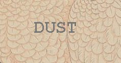
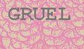
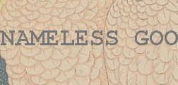

Monday, February the 23rd, 2004
back to: title, date or indexes
Dissolve one ounce of borax in a pint of boiling water. Add two ounces of shellac, and boil in a covered vessel until the lac is dissolved. This forms a very useful and cheap cement. It answers well for pasting labels on tin, and withstands damp much better than the common glue. The liquid glue made by dissolving shellac in naphtha is dearer, soon dries up, and has an unpleasant smell. If you do not have any labels to paste on tin, here are some you can print out to start you off:
